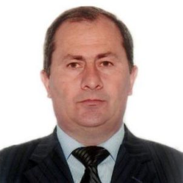
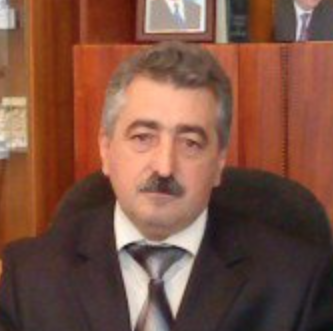

Konfransda Çıxış Edəcək Mütəxəssİslər
Xarici Mütəxəssislər

Prof.Dr. Levent Aydın
Uludağ universiteti Baytarlıq Fakultəsi Parazitoloji Anabilim Dalı

Dr.Ali Korkmaz
Kənd Təsərrüfatı Yüksək Muhendisi

Vladimr Malykhn
Professional Arıçı

Ahmet Inci
Kənd Təsərrüfatı Yüksək Muhendisi

Dr. İbrahim Özcan
Kənd Təsərrüfatı Nazirliyi Heyvandarlıq İdarəsinin Müdir Müavini

Ziya Shahin
Türkiyə Arı Yetişdiriciləri Mərkəz Birliyinin Sədri

Faraj Molevi
İran Arıçılar Birliyi Sədri
Prof.Dr. Aleksei Borisovhic
Apisfera Firması
Yerli Mütəxəssİslər

Lətif Lətifov
Qinyətoğulları firmasının sahibi

Bədrəddin Həsrətov
Azərbaycan Arıçılar Asossasiyasının Sədri
Dos.Dr Valeh Qədimov

Rüfət Nərimanzadə
Etibar Məmmədov
Arıçılıq kitabının Müəllifi

Şamil Quliyev
Azərbaycan Arıçılar ittifaqının sədri

Dr. Elsevər Əsədov
Naxçivan Dövlət Universiteti Kafedra Müdiri

Dr. Allahverdi Seyidov
Arıçılıq Mərkəzinin Direktoru

Abdullah Şarapçıyev
Professional Arıçı

Samir Əliyev
İqtisadi Təşəbbüslərə Yardım İctimai Birliyinin departament müdiri